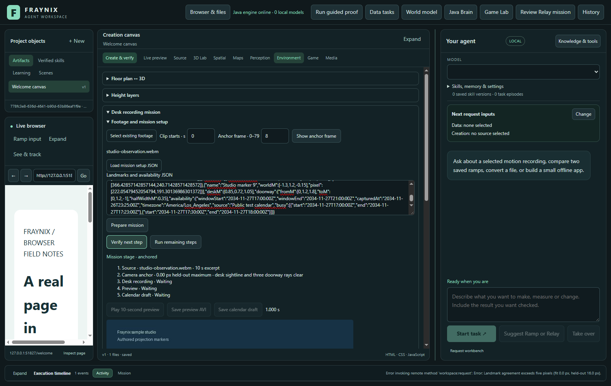
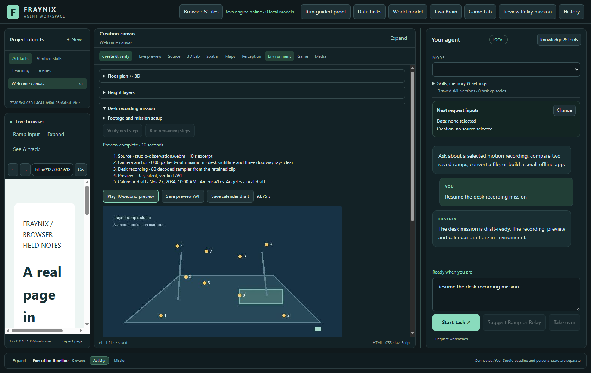

Resume a desk recording, preview and calendar draft
Open the sample room, review its recorded observation, and replay the complete mission offline.

The test camera anchor and confirmed desk and doorway checks

Chat resumes the recording mission and the verified preview plays
System files
Open source